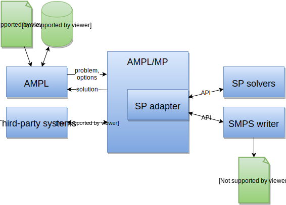

<!doctype html> <html lang="en">
<head>
  <meta charset="utf-8">

  <title>New Solver Interface Approaches for Stochastic Programming in AMPL</title>

  <meta name="author" content="Victor Zverovich">

  <meta name="apple-mobile-web-app-capable" content="yes" />
  <meta name="apple-mobile-web-app-status-bar-style"
        content="black-translucent" />

  <meta name="viewport"
        content="width=device-width, initial-scale=1.0, maximum-scale=1.0, user-scalable=no">

  <link rel="stylesheet" href="../common/reveal.js/css/reveal.css">
  <link rel="stylesheet" href="../common/reveal.js/css/theme/beige.css" id="theme">

  <!-- For syntax highlighting -->
  <link rel="stylesheet" href="../common/reveal.js/lib/css/zenburn.css">

  <!-- If the query includes 'print-pdf', include the PDF print sheet -->
  <script>
    if( window.location.search.match(/print-pdf/gi) ) {
      var link = document.createElement('link');
      link.rel = 'stylesheet';
      link.type = 'text/css';
      link.href = '../common/reveal.js/css/print/pdf.css';
      document.getElementsByTagName('head')[0].appendChild(link);
    }
  </script>

  <style>
  body {background: white;}
  comment {display: none;}

  .reveal h1 {
    padding-bottom: 50px;
  }
  
  .reveal h1,
  .reveal h2 {
    font-size: 200%;
    text-transform: none;
    text-align: center;
    margin: 0;
  }
  .reveal section:first-of-type {
    text-align: center;
  }
  .reveal section {
    text-align: left;
  }
  
  .reveal p {
    margin-top: 10px;
    margin-bottom: 10px;
  }

  .reveal .MathJax_Display {
    margin-top: 20px;
    margin-bottom: 20px;
  }
  .reveal .plot {
    box-shadow: 0 0 20px #888888;
    margin-left: auto; margin-right: auto;
  }
  
  .reveal .transp-image {
    display: block;
    margin-left: auto;
    margin-right: auto;
    border: none;
    box-shadow: none;
  }
  
  /* Fix nohighlight styles. */
  .reveal pre code {
    display: block;
    background: #3F3F3F;
    color: #DCDCDC;
    max-height: 100%;
  }
  
  /* Fix image styles. */
  .reveal section img { border: none; box-shadow: none; }
  
  img.float-right {
    clear:right;
    float:right;
  }

  div .new { color: red; }

  /* D3 styles */
  .node circle {
    fill: #fff;
    stroke: steelblue;
    stroke-width: 1.5px;
  }

  .node {
    font: 20px sans-serif;
  }

  .link {
    fill: none;
    stroke: #ccc;
    stroke-width: 1.5px;
  }
  
  .chart rect {
    fill: steelblue;
  }

  .chart .bar text {
    fill: white;
    font: 20px sans-serif;
    text-anchor: end;
  }
  .chart .axis text {
    font: 20px sans-serif;
    fill: black;
  }
  .chart .x.axis text {
    font: 16px sans-serif;
  }

  .chart .axis path,
  .chart .axis line {
    fill: none;
    stroke: #000;
    shape-rendering: crispEdges;
  }
  .chart .y.axis line,
  .chart .y.axis path {
    display: none;
  }
  </style>

  <script type="text/javascript" charset="utf-8"
          src="MathBox.js/vendor/domready.js"></script>
  <script type="text/javascript" charset="utf-8"
          src="MathBox.js/build/MathBox-bundle.js"></script>

  <link href="MathBox.js/base.css" rel="stylesheet" type="text/css"
        media="screen">
</head>

<body>
<script src="../common/reveal.js/lib/js/head.min.js"></script>
<script src="../common/reveal.js/js/reveal.js"></script>


<div class="reveal">
<!-- Any section element inside of this container is displayed as a slide -->
<div class="slides">

<section data-markdown data-separator="---">
<script type="text/template">
New Solver Interface Approaches for Stochastic Programming in AMPL
==================================================================

Victor Zverovich, Robert Fourer

<a href="http://ampl.com/">AMPL Optimization Inc.</a>

Gautam Mitra, Christian Valente

<a href="http://www.optirisk-systems.com/">OptiRisk Systems</a>

<br>

<a href="http://icsp2016.sciencesconf.org/">
ICSP2016, 25 Jun - 1 Jul 2016 Búzios, Brazil
</a>

---

## Outline

* Overview SP solver interfaces

* New approach

* Examples

* Second-order stochastic dominance

* Implementation

* Conclusions and future work

---

## Existing solver interfaces/formats

* 
  SMPS: format for stochastic linear programs

* COIN-OR SMI: open-source interface for modeling stochastic linear programming
  problems

* Stochastic AMPL extensions

* AIMMS, GAMS, Pyomo have some SP facilities

* Solvers: FortSP, MSLiP, ...

---

## Problems

No established open API for stochastic solvers

* 
  SMPS is used in many test sets, but is column-oriented, error-prone,
  incomplete implementations

* COIN-OR SMI: open interface, but virtually no solver connections

* Closed proprietary interfaces with few solver connections or only naive
  Benders decomposition and DEP

* Incompatible solver APIs or even no public API

---

## Stochastic programming in AMPL

* **SAMPL**: C. Valente, G. Mitra, M. Sadki, and R. Fourer. Extending algebraic
  modelling languages for stochastic programming, INFORMS Journal on Computing,
  21, 107–122, 2009.

* **SML**: M. Colombo, A. Grothey, J. Hogg, K. Woodsend, J. Gondzio.
  A Structure-Conveying Modelling Language for Mathematical and Stochastic
  Programming, Technical Report ERGO 09-003, School of Mathematics.
  Published in Mathematical Programming Computation, 1 (4), 223–247, 2009.

* **StAMPL**: R. Fourer, L. Lopes. StAMPL: a filtration-oriented modeling tool
  for multistage recourse problems, INFORMS Journal on Computing 21(2),
  242–256, 2009.

<!-- .element: style="font-size: 90%" -->

---

## Limitations

* Custom translator for the extended language or preprocessing to convert
  code into the standard AMPL form

* Compatibility issues: not all AMPL constructs supported

* Preprocessing makes debugging harder because errors may refer to preprocessed,
  not original code.

* Performance: preprocessing overhead, custom translators may not be as
  optimized as AMPL

---

## Solution

<div style="text-align: center">

<br/>
... applied to stochastic programming
</div>

---

## New approach

* Use standard AMPL extension mechanisms to represent random constructs:

  * Suffixes (metadata) to partition variables into stages

  * Functions to represent expectation, random variables (parameters) and
    vectors

* Extract SP information on the solver interface level

* The same approach has been successfully used for SSD and constraint
  programming

---

## Example: airlift operation scheduling

* Aircraft of several different types are available for service.

* Need to assign aircraft to different routes in order to satisfy demand.

* Demand is uncertain.

* Recourse actions with associated costs:

  * Switch aircraft from one route to another

  * Buy commercial flights

Originally described by Midler and Wollmer (1969).

Part of slptestset: https://www4.uwsp.edu/math/afelt/slptestset.html

---

## Airlift example: sets and parameters

```cs
set AircraftTypes;
set Routes;

# The maximum number of flight hours for aircraft of type i available during
# the month (F_i).
param MaxHours{i in AircraftTypes} >= 0;

# The number of flight hours required for an aircraft of type i to complete
# one flight of route j (a_{ij}).
param Hours{i in AircraftTypes, j in Routes} >= 0;

set Switches = {i in AircraftTypes, j in Routes, k in Routes: k != j};

# The number of flight hours required for aircraft of type i to fly
# route k, after having been switched from route j. Note that an increase of
# switched_flights[i, j, k] flights for route k results in the cancellation of
# (SwitchedHours[i, j, k] / Hours[i, j]) * switched_flights[i, j, k]
# flights for route j, since "k flights" and "j flights" are not necessarily
# equal units (a_{ijk}).
param SwitchedHours{(i, j, k) in Switches} >= 0;
```
<!-- .element: style="font-size: 45%" -->

---

## Airlift example: sets and parameters

```cs
# The carrying capacity (in tons) of a single flight of an aircraft of type i,
# flying route j (b_{ij}).
param Capacity{i in AircraftTypes, j in Routes} >= 0;

# The cost for aircraft type i to be initially assigned and fly one flight of
# route j (c_{ij}).
param AssignCost{i in AircraftTypes, j in Routes} >= 0;

# The cost for aircraft type i to fly one flight of route k, after having been
# initially assigned route j (c_{ijk}).
param SwitchCost{(i, j, k) in Switches} >= 0;

# The cost per ton of commercially contracted transport on route j (c^+_j).
param ContractedCost{j in Routes} >= 0;

# The cost per ton of unused capacity on route j (c^-_j).
param UnusedCost{j in Routes} >= 0;
```
<!-- .element: style="font-size: 45%" -->

---

## Airlift example: variables

```cs
suffix stage IN;

# The number of flights originally planned for route j using aircraft of
# type i (x_{ij}).
var flights{i in AircraftTypes, j in Routes} >= 0;

# Increase in the number of flights for route k flown by aircraft type i,
# because of being switched from route j (x_{ijk}).
var switched_flights{(i, j, k) in Switches} >= 0, suffix stage 2;

# The load originally scheduled to be carried on route j (i.e. the "best guess"
# of the demand).
var load{j in Routes} = sum{i in AircraftTypes} Capacity[i, j] * flights[i, j];

# The total carrying capacity switched away from route j in the recourse action.
var capacity_out{j in Routes} =
  sum{i in AircraftTypes, k in Routes: k != j}
    Capacity[i, j] * (SwitchedHours[i, j, k] / Hours[i, j]) *
      switched_flights[i, j, k], suffix stage 2;

# The carrying capacity switched to route j.
var capacity_in{j in Routes} =
  sum{i in AircraftTypes, k in Routes: k != j}
    Capacity[i, j] * switched_flights[i, k, j], suffix stage 2;

# The demand for route j which is contracted commercially in the
# recourse (y^+_j).
var contracted{j in Routes} >= 0, suffix stage 2;

# The unused capacity assigned to route j (y^-_j),
var unused{j in Routes} >= 0, suffix stage 2;
```
<!-- .element: style="font-size: 45%" -->

---

## Random vectors

```cs
# The number of scenarios.
param NumScen >= 0;

# The random variable (parameter) representing the demand for route j (d_j).
var RandomDemand{j in Routes};

# Realizations of the demand for route j (d_j).
param Demand{j in Routes, s in 1..NumScen};
```
<!-- .element: style="font-size: 45%" -->

Random vector with elements `RandomDemand[j], j in Routes` and equiprobable
realizations `Demand[j, s], j in Routes, s in 1..NumScen`:

```cs
function random;
demand: random({j in Routes} (RandomDemand[j], {s in 1..NumScen} Demand[j, s]));
```
<!-- .element: style="font-size: 45%" -->

Corresponds to `BLOCKS DISCRETE` in SMPS.

---

## Independent random variables/parameters

Independent random variables `RandomDemand[j], j in Routes` with
realizations `Demand[j, s], j in Routes, s in 1..NumScen` and probabilities
`P[s], s in 1..NumScen`:

```cs
# Scenario probabilities.
param P{1..NumScen};

function random;
demand{j in Routes}: random(
  {s in 1..NumScen} P[s], RandomDemand[j], {s in 1..NumScen} Demand[j, s]);
```
<!-- .element: style="font-size: 45%" -->

* As before probabilities can be omitted if they are equal.
* The rest of the model remains the same!

---

## Expectation objective

```cs
function expectation;

minimize expected_cost:
  sum{i in AircraftTypes, j in Routes} AssignCost[i, j] * flights[i, j] +
  expectation(
    sum{(i, j, k) in Switches}
      (SwitchCost[i, j, k] -
        AssignCost[i, j] * (SwitchedHours[i, j, k] / Hours[i, j])) *
      switched_flights[i, j, k] +
    sum{j in Routes} ContractedCost[j] * contracted[j] +
    sum{j in Routes} UnusedCost[j] * unused[j]);
```
<!-- .element: style="font-size: 45%" -->

Extensible: it is possible to define other functions like CVaR and handle
them on the solver level.

---

## Constraints

First stage:

```cs
# The first-stage constraint.
s.t. flight_hours{i in AircraftTypes}:
  sum{j in Routes} Hours[i, j] * flights[i, j] <= MaxHours[i];
```
<!-- .element: style="font-size: 45%" -->

Second stage:

```cs
# The second-stage constraint: we cannot switch away more flight hours from
# aircraft of type i and from route j, than we have originally scheduled for
# such.
s.t. switch_flight_hours{i in AircraftTypes, j in Routes}:
  sum{k in Routes: k != j} SwitchedHours[i, j, k] * switched_flights[i, j, k]
    <= Hours[i, j] * flights[i, j];

# The recourse constraint that the demand for each route must be met.
s.t. satisfy_demand{j in Routes}:
  load[j] - capacity_out[j] + capacity_in[j] + contracted[j] - unused[j]
    = RandomDemand[j];
```
<!-- .element: style="font-size: 45%" -->

* `RandomDemand` is a random variable/parameter
* Randomness in the RHS

---

## SMPS writer

Converts an SP problem from AMPL or NL format into SMPS.

Example:
```cs
ampl: include airlift-first.ampl
ampl: write gtest;
ampl: shell 'smpswriter test';
ampl: shell 'fortsp test --smps-obj-sense=minimize';
Stage 1 has 2 row(s), 4 column(s), and 4 nonzero(s).
Stage 2 has 6 row(s), 8 column(s), and 24 nonzero(s).
Problem has 2 stage(s) and 25 scenario(s).
Itn      Objective          Bound        Rel.Gap
  1         255842   -2.56352e+06          11.02
  2         255842         223594       0.126048
...
 14         249121         249095    0.000104291
 15         249106         249102    1.63673e-05
 16         249102         249102   -1.16835e-16
Number of iterations = 16.
Master time = 0.001763 s.
Recourse time = 0.013658 s.
Optimal solution found, objective = 249102.
Solution time = 0.053756 s.
```

---

## Example 2: farmer's problem

```cs
suffix stage IN;

set Crops;

set Scen;
param P{Scen}; # probabilities

param TotalArea;               # acre
param PlantingCost{Crops};     # $/acre
param SellingPrice{Crops};     # $/T
param ExcessSellingPrice;      # $/T
param PurchasePrice{Crops};    # $/T
param MinRequirement{Crops};   # T
param BeetsQuota;              # T

# Area in acres devoted to crop c.
var area{c in Crops} >= 0;

# Tons of crop c sold (at favourable price) under scenario s.
var sell{c in Crops} >= 0, suffix stage 2;

# Tons of sugar beets sold in excess of the quota under scenario s.
var sell_excess >= 0, suffix stage 2;

# Tons of crop c bought under scenario s
var buy{c in Crops} >= 0, suffix stage 2;
```
<!-- .element: style="font-size: 45%" -->

Source: John R. Birge and Francois Louveaux. Introduction to Stochastic
Programming.

---

## Farmer's problem

```cs
function expectation;
function random;

# The random variable (parameter) representing the yield of crop c.
var RandomYield{c in Crops};

# Realizations of the yield of crop c.
param Yield{c in Crops, s in Scen}; # T/acre

maximize profit:
  expectation(
    ExcessSellingPrice * sell_excess +
    sum{c in Crops} (SellingPrice[c] * sell[c] -
                     PurchasePrice[c] * buy[c])) -
  sum{c in Crops} PlantingCost[c] * area[c];

s.t. totalArea: sum {c in Crops} area[c] <= TotalArea;

s.t. requirement{c in Crops}:
  RandomYield[c] * area[c] - sell[c] + buy[c] >= MinRequirement[c];

s.t. quota: sell['beets'] <= BeetsQuota;

s.t. sellBeets:
  sell['beets'] + sell_excess <= RandomYield['beets'] * area['beets'];

yield: random({c in Crops} (RandomYield[c], {s in Scen} Yield[c, s]));

```
<!-- .element: style="font-size: 45%" -->

Randomness in the constraint matrix.

---

## Second-order stochastic dominance

Let $R$ and $R'$ be random variables defined on the probability
space $(\Omega, \mathcal{F}, P)$.

$R$ dominates $R'$ with respect to SSD if and only if
$\textrm{E}[U(R)] \ge \textrm{E}[U(R')]$
for any nondecreasing and concave utility function $U$.

This sets out the use of SSD relation to determine preferences of
a risk-averse decision maker.

Denoted as $R \succeq\_{_{SSD}} R'$.

Strict relation:
$R \succ\_{\_{SSD}} R' \Leftrightarrow R \succeq\_{\_{SSD}} R' \mbox{ and } R' \not{\succeq\_{\_{SSD}}} R.$

---

## Alternative definitions of SSD

* Definition using the performance function (Fishburn and Vickson, 1978):

  $F^{(2)}\_R(t) \leq F^{(2)}_{R'}(t) \mbox{ for all $t \in \mathbb{R}$,}$

  where the performance function
  $F^{(2)}\_R(t) = \int\_{-\infty}^{t} F\_R(u) \mathrm{d}u$
  represents the area under the graph of the cumulative
  distribution function $F\_R(t) = P(R \leq t)$ of a real-valued random
  variable $R$.
* Definition using the $\textrm{Tail}$ function (Ogryczak and Ruszczyński, 2002):
  $\textrm{Tail}\_{\alpha}(R) \geq \textrm{Tail}\_{\alpha}(R') \mbox{ for all $0 \lt \alpha \leq 1$,}$
  where $\textrm{Tail}\_{\alpha}(R)$ denotes the unconditional expectation of the
  smallest $\alpha \cdot 100\%$ of the outcomes of $R$.

---

## Illustration of second-order stochastic dominance

<div style="text-align: center">
<div style="float: left">
<br/>
CDF
</div>
<div>
<br/>
Performance Functions
</div>
</div>

---

## Portfolio problem

There are $n$ assets and at the beginning of a time period an investor has to
decide what proportion $x\_i$ of the initial wealth to invest in asset $i$.
So a portfolio is represented by a vector
$\textbf{x} = (x\_1, x\_2, \dots, x\_n) \in X \subset \mathbb{R}^n$,
where $X$ is a bounded convex polytope representing the set
of feasible portfolios; in particular it can be defined as
$X = \{\textbf{x} \in \mathbb{R}\_+^n: \sum\_{i=1}^n{x_i} = 1\},$
if short positions are not allowed and there are no other modelling
restrictions.

Let $\textbf{R}$ denote the $n$-dimensional random vector of asset returns at
the end of the time period. Then the real-valued random variable
$R\_{\textbf{x}} = \textbf{R}^T \textbf{x}$ is the random return of
portfolio $\textbf{x}$.

---

## Model of Dentcheva and Ruszczynski

Dentcheva and Ruszczyński (2006) proposed the following model with an SSD
constraint:

$$
\begin{array}{ll}
\mathrm{maximize} & f(x) \\\\
\mathrm{s.t.}     & x \in X, \\\\
                  & R\_{\textbf{x}} \succeq\_{\_{SSD}} \widehat{R}, \\\\
\end{array}
$$
where $f$ is a concave continuous function, $\widehat{R}$ is a reference random
return such as the return of a stock market index.

Special case: $f(x) = \textrm{E}[{R_{\textbf{x}}}]$

---

## Model with SSD Constraints

Fábián et al. (2010) proposed a version of the model
which is expressed in the following SSD-constrained form:

$$
\begin{array}{ll}
\textrm{maximize} & \vartheta \\\\
\textrm{s.t.}     & \vartheta \in \mathbb{R}, \textbf{x} \in X, \\\\
                  & R\_{\textbf{x}} \succeq\_{\_{SSD}} \widehat{R} + \vartheta. \\\\
\end{array} 
$$

and a cutting-plane algoritm to solve it.

In this model one computes a portfolio that dominates a sum of the reference
return and a riskless return $\vartheta$.

---

## Portfolio model in AMPL with explicit cuts

```cs
param nASSET integer >= 0;  # number of assets
set ASSETS := 1..nASSET;    # set of assets

param nSCEN > 0;
param asset_returns{1..nASSET, 1..nSCEN};
param index_returns{1..nSCEN};

param nCUT integer >= 0 default 0; # number of cuts
set CUTS := 1..nCUT;        # set of cuts

param cut_const {CUTS};     # constant in cut
param cut {CUTS,ASSETS};    # multipliers in cut
param scaling_factor {CUTS} default 1;

# portfolio: investments into different assets
var Invest {ASSETS} >= 0 default 1 / nASSET;
var Dom;                    # dominance measure

maximize Uniform_Dominance: Dom;

subject to Dom_constraint {c in CUTS}:
  scaling_factor[c] * Dom + cut_const[c]
    <= sum {a in ASSETS} cut[c,a] * Invest[a];

subject to Budget: sum {a in ASSETS} Invest[a] = 1;
```

---

## Portfolio model in AMPL using SSD support

```cs
include ssd.ampl;

param NumScenarios;
param NumAssets;

set Scenarios = 1..NumScenarios;
set Assets = 1..NumAssets;

# Return of asset a in senario s.
param Returns{a in Assets, s in Scenarios};

# Reference return in scenario s.
param Reference{s in Scenarios};

# Fraction of the budget to invest in asset a.
var invest{a in Assets} >= 0 <= 1;

subject to ssd_constraint{s in Scenarios}:
  ssd_uniform(sum{a in Assets} Returns[a, s] * invest[a], Reference[s]);

subject to budget: sum{a in Assets} invest[a] = 1;
```

---

## AMPL Solver Library

* 
  A C library for connecting solvers to AMPL

* Used by most solvers

* "Classical" API

* Open-source
  * http://ampl.com/netlib/
  * https://github.com/ampl/mp

* Portable

* Described in Technical Report "Hooking Your Solver to AMPL"
  by David M. Gay, Bell Laboratories, April 18, 1997.

---

## The AMPL/MP library

* 
  A C++ alternative to ASL

* Used in several new solver interfaces
  * constraint programming solvers: ilogcp, gecode, jacop
  * LocalSolver
  * **SMPS writer, SSD solver**

* Open-source: https://github.com/ampl/mp (includes ASL)

* Portable

* Documentation: http://ampl.github.io/

---

## Architecture

<div style="text-align: center">

</div>

---

## SP adapter

Part of the AMPL/MP library that provides access to

* The core problem
* Stages
* Random variables/vectors

High-level, efficient and type-safe C++ API.

---

## Links

* SMPS writer and the farmer's SP problem in AMPL:
  https://github.com/ampl/mp/blob/master/solvers/smpswriter

* Airlift operation scheduling SP problems in AMPL:
  https://github.com/vitaut/splib/tree/master/slptestset/airlift

* SSD solver:
  https://github.com/ampl/mp/blob/master/solvers/ssdsolver
  

---

## Limitations and future work

* Randomness in variable bounds and ranges is not supported, but can be
  expressed by other means.

* Extend to multiple stages. Some work in this direction has already been done,
  but need a way to represent scenario trees.

* Connect solvers via SP adapter API.

---

## Advantages

* Compatible: no changes to the AMPL translator, the NL format or
  third-party tools

* Efficient: no preprocessing, extracting SP information is fast

* Compact: NL representation is comparable or smaller than equivalent SMPS,
  e.g. airlift problem is 2x smaller.

* Open: the solver library is open-source and anyone (both solvers
  and modeling systems) can use it

* High-level native API to access SP information:
  no exotic languages, VMs or interpreters

* No debugging issues introduced by preprocessing
---

## Obrigado!

</script>
</section>

</div>
</div>

<script>
  // Full list of configuration options available here:
  // https://github.com/hakimel/reveal.js#configuration
  Reveal.initialize({
    controls: true,
    progress: true,
    history: true,
    center: true,

    theme: Reveal.getQueryHash().theme, // available themes are in /css/theme

    // Transitions: default/cube/page/concave/zoom/linear/fade/none
    transition: Reveal.getQueryHash().transition || 'default',

    // Parallax scrolling
    // parallaxBackgroundImage: 'https://s3.amazonaws.com/hakim-static/reveal-js/reveal-parallax-1.jpg',
    // parallaxBackgroundSize: '2100px 900px',

    math: {
      mathjax: '../common/MathJax-2.6.1/MathJax.js',
      config: 'TeX-AMS-MML_HTMLorMML'  // See http://docs.mathjax.org/en/latest/config-files.html
    },

    // Optional libraries used to extend on reveal.js
    dependencies: [
      { src: '../common/reveal.js/lib/js/classList.js',
        condition: function() { return !document.body.classList; } },
      { src: '../common/reveal.js/plugin/markdown/marked.js',
        condition: function() { return !!document.querySelector( '[data-markdown]' ); } },
      { src: '../common/reveal.js/plugin/markdown/markdown.js',
        condition: function() { return !!document.querySelector( '[data-markdown]' ); } },
      { src: '../common/reveal.js/plugin/highlight/highlight.js', async: true,
        callback: function() { hljs.initHighlightingOnLoad(); } },
      { src: '../common/reveal.js/plugin/zoom-js/zoom.js', async: true,
        condition: function() { return !!document.body.classList; } },
      { src: '../common/reveal.js/plugin/notes/notes.js', async: true,
        condition: function() { return !!document.body.classList; } },
      { src: '../common/reveal.js/plugin/math/math.js', async: true }
    ]
  });
  //Reveal.addEventListener('slidechanged', function(event) {
  //  document.getElementById("logo").style.visibility = Reveal.isFirstSlide() ? 'hidden' : 'visible';
  //});
</script>

<!-- Google Analytics -->
<script type="text/javascript">
  var _gaq = _gaq || [];
  _gaq.push(['_setAccount', 'UA-20116650-1']);
  _gaq.push(['_trackPageview']);
  (function() {
    var ga = document.createElement('script'); ga.type = 'text/javascript'; ga.async = true;
    ga.src = ('https:' == document.location.protocol ? 'https://ssl' : 'http://www') + '.google-analytics.com/ga.js';
    var s = document.getElementsByTagName('script')[0]; s.parentNode.insertBefore(ga, s);
  })();
</script>
</body>
</html>
